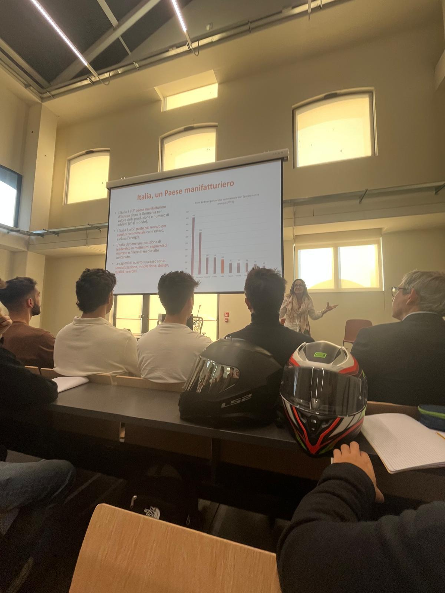
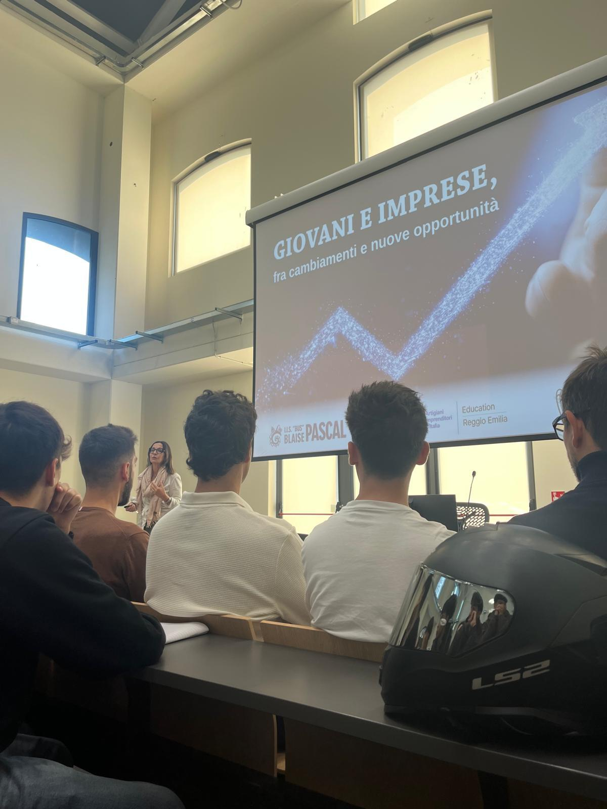
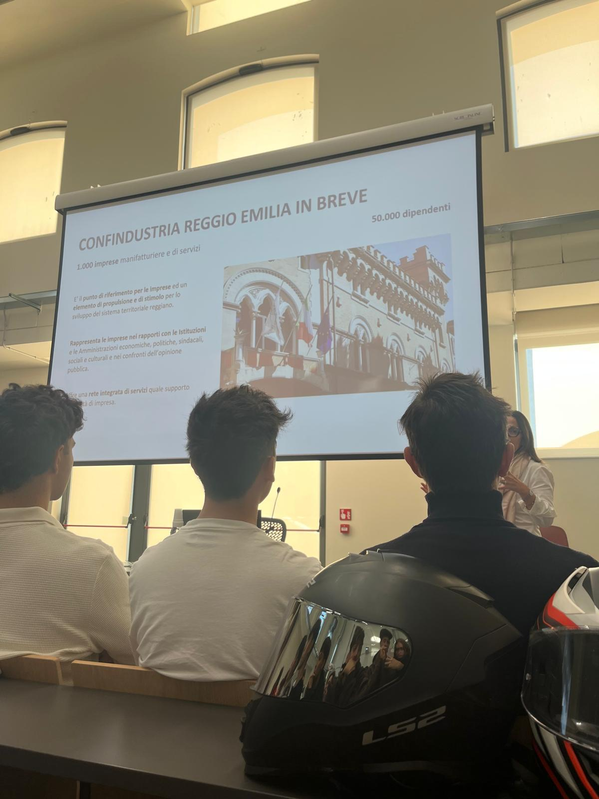

Progetto CNA




Il 30 settembre 2025, le classi quarte hanno partecipato a un incontro presso il Tecnopolo di Reggio Emilia dal titolo "Giovani e Imprese: fra cambiamenti e nuove opportunità", organizzato dalla CNA. L'evento ci ha fornito un quadro aggiornato sul mercato del lavoro attuale e futuro, aiutandoci a orientarci in modo consapevole.
Durante la prima parte, abbiamo analizzato il contesto macroeconomico: le professioni a rischio automazione a confronto con le nuove figure emergenti legate a sostenibilità, cybersecurity e intelligenza artificiale. È emerso chiaramente come le competenze STEM siano tra le più richieste, ma spesso carenti sul mercato.
Successivamente, ci siamo concentrati sugli strumenti per l'orientamento personale. Attraverso il modello di Holland abbiamo esplorato i diversi ambienti lavorativi per riflettere sulle nostre attitudini. È stata sottolineata l'importanza sia delle hard skills (competenze tecniche), sia delle sempre più determinanti soft skills (competenze trasversali come comunicazione, leadership e gestione dello stress). Infine, ci sono stati illustrati i percorsi post-diploma, dalle lauree agli ITS Academy.
Pur essendo stato un incontro formale e informativo, si è rivelato un'esperienza estremamente utile: ci ha messo a disposizione dati reali e concreti, fondamentali per aiutarci ad affrontare le nostre scelte formative e professionali future con molta più chiarezza.